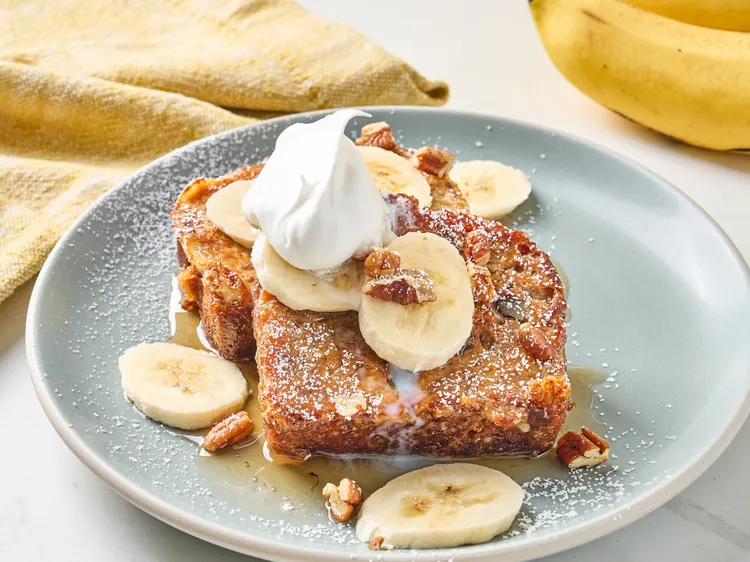

Banana Bread French Toast

Description
This Banana Bread French Toast is a delicious twist on the classic breakfast favorite.
Golden slices of banana bread are dipped in a cinnamon-vanilla egg mix and pan-fried until crisp outside and soft inside. Perfect with syrup, fruit, or powdered sugar.
Ingredients
- 3 eggs
- 3 tablespoons sweetened condensed milk
- 1 teaspoon vanilla extract
- 1 loaf banana bread
- 2 tablespoons unsalted butter
- 1 tablespoon confectioners' sugar (for dusting)
- ¼ cup of chopped walnuts (optional)
- 1 banana (optional)
Steps
- Whisk eggs, sweetened condensed milk, and vanilla together in a bowl with a fork; set aside. Slice banana bread into 4 thick slices. Dip each bread slice in egg mixture.
- Meanwhile, melt butter in a large skillet over medium heat. Add bread slices to skillet. Cook until both sides golden brown.
- Dust with confectioners' sugar just before serving, or top with chopped walnuts and banana slices.
Home